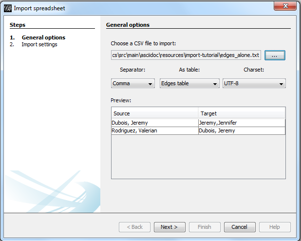

Source,Target (1)
Jeremy,Jennifer
Valerian,JeremyImporting csv data in Gephi
last modified: 2017-03-24
'Escape' or 'o' to see all sides, F11 for full screen, 's' for speaker notes
Importing an existing network file
Gephi handles the import of network files in a variety of formats:

Figure 1. file formats supported by Gephi. Source: gephi.org
To import any of these files, just choose the File → Open menu
Importing nodes with labels and their relations: simplest version
(looking for the complete, full featured csv import version? skip to here.)
The easiest is probably to just have a text file like this one:
This line is mandatory. Don’t put a space between the comma and "Target"
Just write this in a text editor and save it as a file example.txt
To import this file in Gephi, go to File→Import Spreadsheet. Then in the window:

Figure 2. Importing nodes with labels and their relations
In this window, make sure the box "Create missing nodes" is checked:

Figure 3. Second screen
Importing nodes with labels and their relations: full version
Let’s look again at the simple text file we used:
Source,Target Jeremy,Jennifer Valerian,Jeremy
There are 2 issues and several missing features, listed below:
1. labels containing commas in them will not work.
Imagine our characters have first names and last names separated by a comma:
Dubois, Jeremy
Rodriguez, Valerian
This will look like:
Source,Target Dubois, Jeremy,Jeremy,Jennifer Rodriguez, Valerian,Dubois, Jeremy
Note that we have 3 commas per line, instead of one! In this mess, Gephi will not detect where the node labels start and end. The import will break.
The proper solution is to put node labels inside double quotes:
Source,Target "Dubois, Jeremy","Jeremy,Jennifer" "Rodriguez, Valerian","Dubois, Jeremy"
Be careful to use these straight " " double quotes, not the curvy ones: “ ” which French keyboards sometimes have.
2. labels containing double quotes " " in them will not work.
Example: let’s imagine that one of our characters has a middle name: Jeremy "Danger" Dubois. Our text file will look like:
Source,Target "Dubois, Jeremy "Danger"","Jeremy,Jennifer" "Rodriguez, Valerian","Dubois, Jeremy "Danger""
These extra " " will make the Gephi import break:

Figure 4. The import bugs - the middle name has disappeared
The solution consists in adding an extra double quote in front of the double quotes. Our text file will look like:
Source,Target "Dubois, Jeremy ""Danger""","Jeremy,Jennifer" "Rodriguez, Valerian","Dubois, Jeremy ""Danger"""
This time, Gephi imports the network correctly:

Figure 5. Importing node labels containing double quotes
Importing more than labels: nodes and edges attributes
To import attributes we will need to proceed differently.
We need 2 text files: one for the list of nodes, one for the list of relations (edges)
An example file with a list of nodes:
Id,Label,Date of Birth,Place of Birth,Years of experience,Rating (1) 3,"Dubois, Jeremy ""Danger""",17/09/1980,"Paris",8,9.27 1,"Jeremy,Jennifer",25/03/1978,"Tampa",8,4.34 45,"Rodriguez, Valerian",30/04/1985,"Berlin",5,6.66
Nodes must have at least an Id and a Label. Don’t put spaces after the commas
An example file with a list of edges:
Source,Target,Weight,Type,Where first met (1) 1,45,3,"undirected",London (2)
Edges must have at least a Source and Target. Other fields are optional.
"undirected", the alternative is "directed". Directed edges have arrow heads.
Let’s import the list of nodes first. File → Import Spreadsheet

Figure 6. Importing a list of nodes with attributes
in the next screen, we must be careful with a couple of things:

Figure 7. The attributes of the nodes
Then we can import the file with the list of relations. File → Import Spreadsheet

Figure 8. Importing a list of edges with attributes

Figure 9. The attributes of the edges
Memo card
Nodes
header must be at least
Id,Label
Edges
header must be at least
Source,TargetTo have an attribute for the "thickness" or "strength" of a relation, this attribute must be called "Weight".
Want arrows on your links? Add an attribute "Type", with value "Directed"
Don’t wan’t arrows? Add an attribute "Type", with value "Undirected"
Types of attributes: which to choose?

Figure 10. Kinds of attributes
Textual attribute:
String. Nodes sharing the same textual value can be colored the same, or filtered together…Numerical attribute:
Integer,DoubleorFloat. Nodes can be resized according to their value, or colorized in a gradient. Filters can be applied based on the range of values.Boolean attribute: just a
trueorfalsevalue. Useful for filtering out some nodes which are true or false on some parameter.Other types of attributes: not needed for the moment.
(to be continued)
More tutorials on importing data to Gephi
The end!
Visit the Gephi group on Facebook to get help,
or visit the website for more tutorials